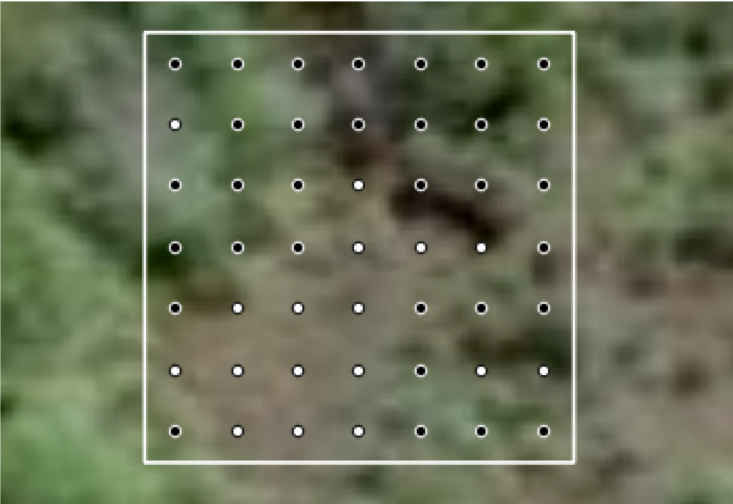

2.3 Parcelles d’entraînement
2.3.1 Échantillonnage
Les parcelles d’entraînement sont sélectionnées de manière à couvrir la plus large gamme possible de couverture végétale sur l’ensemble du territoire du Togo. À cette fin, le NDVI comme indicateur du couvert végétal est attribué à tout les points du réseau d’échantillonnage et stratifiées en 10 classes NDVI. Un échantillon aléatoire spatialement équilibré de 1 500 échantillons est ensuite tiré de chaque strate NDVI (generalized random tesselation).
2.3.2 Couverture des houppiers
Pour détérminer la couverture des houppiers une grille de 7 x 7 points est définit à l’intérieur de chaque parcelles d’échantillonage. Pour chaque point de ce grille, les photo-interprètes détérminent sur base des images de très haute résolution disponible en GoogleEarth, si le point touche l’houppier d’un arbre ou non. La couverture des houppiers est en suite détérminé par le nombre des points qui tombent sur un arbre par rapport au ombre total des points (n = 49).

La grille de 7 x 7 points est crée avec le code suivant. L’attribution est fait par les photo-interprètes en QGIS, avec l’image GoogleEarth comme carte de base. La date d’acquistion de l’image GoogleEarth utilisé est également enregistré. Elle est obtenu par GoogleEarth Pro (plugin QGIS send2google_earth).
SSTS/create-train-plots.R
##################################################################################
# SSTS/BdD/create-train-plots.R: create a set of training plots
# --------------------------------------------------------------------------------
# Bern University of Applied Sciences
# Oliver Gardi, <oliver.gardi@bfh.ch>
# 11 March 2020
OUT.DIR <- paste0(DIR.SST.BDD, "/02_train-plots/empty")
if(!dir.exists(OUT.DIR)) dir.create(OUT.DIR, recursive=TRUE)
# load SSTS sampling grid
frame.points <- readOGR(paste0(DIR.SST.BDD, "/01_reseau-SSTS/TGO_frame_480m.shp"))
# load masked 2018 NDVI
ndvi <- merge(raster(paste0(DIR.SST.DAT, "/Landsat/p192/p192_2018_m.tif"), band=12),
raster(paste0(DIR.SST.DAT, "/Landsat/p193/p193_2018_m.tif"), band=12),
raster(paste0(DIR.SST.DAT, "/Landsat/p194/p194_2018_m.tif"), band=12))
# read sampling frame and add NDVI for each plot
frame.points$ndvi <- raster::extract(ndvi, frame.points)
frame.points$ndvi_c <- cut(frame.points$ndvi, 10, labels=paste0("s", 0:9))
# Sampling frame for training-points -----------------------
# Initialize random number generator
set.seed(1)
# design for a spatially balanced sample, drawing 1500 samples of each stratum
Dsgn.grt <- list("s0"=list(panel=c(PanelOne=1500), seltype="Equal"),
"s1"=list(panel=c(PanelOne=1500), seltype="Equal"),
"s2"=list(panel=c(PanelOne=1500), seltype="Equal"),
"s3"=list(panel=c(PanelOne=1500), seltype="Equal"),
"s4"=list(panel=c(PanelOne=1500), seltype="Equal"),
"s5"=list(panel=c(PanelOne=1500), seltype="Equal"),
"s6"=list(panel=c(PanelOne=1500), seltype="Equal"),
"s7"=list(panel=c(PanelOne=1500), seltype="Equal"),
"s8"=list(panel=c(PanelOne=1500), seltype="Equal"),
"s9"=list(panel=c(PanelOne=1500), seltype="Equal")
)
train.points <- grts(design=Dsgn.grt, # using Dsgn design object
DesignID='train', # prefix for each point name
type.frame='finite', # type
src.frame='sp.object', # sample frame is shapefile
sp.object=frame.points,
stratum="ndvi_c"
)
summary(train.points)
# apply coordinate reference system
proj4string(train.points) <- proj4string(frame.points)
# shuffle the rows
train.points <- train.points[sample(1:nrow(train.points)), ]
train.points$SAMPLEID <- paste0("trn-", str_pad(string=1:nrow(train.points), width = 4, pad = "0", side = "left"))
# Convert to plots and add attributes --------------------
landsat.grid <- raster(ndvi)
values(landsat.grid) <- 1
# convert to polygons
train.plots <- rasterToPolygons(mask(landsat.grid, train.points))
# fetch attributes
train.plots@data <- over(train.plots, train.points[, c("PLOTID", "SAMPLEID", "xcoords", "ycoords", "ndvi", "stratum")])
# add attributes
train.plots$ccov <- as.character(NA)
train.plots$img_src <- train.plots$img_date <- as.character(NA)
train.plots$author <- train.plots$mod_date <- as.character(NA)
# write plots as Shapefile and KML
writeOGR(train.plots, dsn=OUT.DIR, layer="COV_parcelles", driver="ESRI Shapefile", overwrite=TRUE)
writeKML(train.plots, kmlname="COV_parcelles", filename=paste0(OUT.DIR, "/COV_parcelles.kml"))
# Create 7x7 sample grid ------------------------------------
grid.size <- 7
res <- res(landsat.grid)[1]
offset <- c(res/grid.size/2 + (0:(grid.size-1))*res/grid.size)
# split the plots for parallel processing
subsets <- split(train.plots, f=1:(CORES-1))
registerDoParallel(CORES-1)
train.grids <- foreach(subset=subsets, .combine=rbind, .multicombine=TRUE) %dopar% {
grids <- SpatialPointsDataFrame(data.frame(x = 0, y = 0), data=data.frame(PLOTID = 0, SAMPLEID = 0, GRIDPOINT = 0))[-1,]
for(p in 1:length(subset)) {
plot <- subset[p,]
ext <- extent(plot)
grids <- bind(grids, SpatialPointsDataFrame(expand.grid(ext@xmin+offset, ext@ymin+offset), data=data.frame(PLOTID = plot$PLOTID, SAMPLEID = plot$SAMPLEID, GRIDPOINT = 1:grid.size^2)))
}
grids
}
proj4string(train.grids) <- proj4string(train.plots)
train.grids$tree <- as.integer(NA) # 1 or 0
writeOGR(train.grids, dsn=OUT.DIR, layer="COV_parcelles_grid", driver="ESRI Shapefile", overwrite=TRUE)
# Divide into 10 subsets and export --------------------
subsets <- split(train.plots, f=1:10)
for(i in 1:length(subsets)) {
writeOGR(subsets[[i]], dsn=OUT.DIR, layer=paste0("COV_parcelles_", i), driver="ESRI Shapefile", overwrite=TRUE)
writeKML(subsets[[i]], kmlname=paste0("COV_parcelles_", i) , filename=paste0(OUT.DIR, "/COV_parcelles_", i, ".kml"))
subset.grids <- train.grids[train.grids$PLOTID %in% subsets[[i]]$PLOTID,]
writeOGR(subset.grids, dsn=OUT.DIR, layer=paste0("COV_parcelles_", i, "_grid"), driver="ESRI Shapefile", overwrite=TRUE)
}